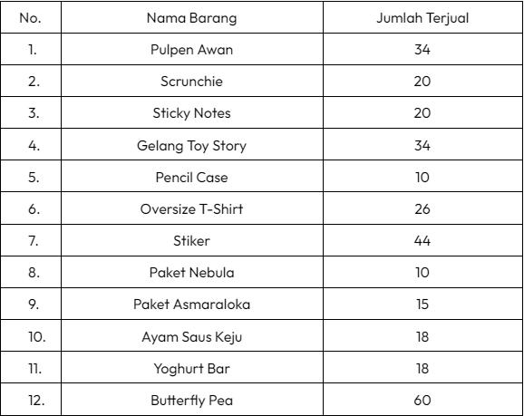

Diagram Tabel Penjualan

Diagram Tabel Penjualan

Dari diagram garis diatas, dapat disimpulkan bahwa penjualan tertinggi adalah Butterfly Pea sebanyak 60 botol dan penjualan terendah adalah Pencil Case dan Paket Nebula sebanyak masing-masing 10 paket.
Diagram Batang Penjualan

Dari diagram garis diatas, dapat disimpulkan bahwa penjualan tertinggi adalah Butterfly Pea sebanyak 60 botol dan penjualan terendah adalah Pencil Case dan Paket Nebula sebanyak masing-masing 10 paket.
Diagram Lingkaran Penjualan
- Pulpen Awan
34/309 x 360 derajat = 39,61 derajat
- Scrunchie
20/309 x 360 derajat = 23,30 derajat
- Sticky Notes
20/309 x 360 derajat = 23,30 derajat
- Gelang Toy Story
34/309 x 360 derajat = 39,61 derajat
- Pencil Case
10/309 x 360 = 11,65 derajat
- Oversize T-Shirt
26/309 x 360 = 30,29 derajat
- Stiker
44/309 x 360 = 51,26 derajat
- Paket AsmaraLoka
15/309 x 360 = 17,475 derajat
- Paket Nebula
10/309 x 360 = 11,65 derajat
- Ayam Saus Keju
18/309 x 360 = 20,97 derajat
- Yoghurt Bar
18/309 x 360 = 20,97 derajat
- Butterfly Pea
60/309 x 360 = 69,90 derajat
Mean
Data saat diurutkan = 10, 10, 15, 18, 18, 20, 20, 26, 34, 34, 44, 60
Jumlah data = 12
Mean = Jumlah semua data/banyaknya data
= (10 + 10 + 15 + 18 + 18 + 20 + 20 + 26 + 34 + 34 + 44 + 60)/12
= 309/12
= 25,75
= 26
Jadi, rata-rata produk yang terjual adalah 26 buah.
Median
Cara Menghitung Nilai Tengah :
- Urutkan nilai dari yang terkecil ke yang terbesar
10 10 15 18 18 20 20 26 34 34 44 60
- Kurangkan Bilangan dari kanan dan kiri sampai mendapat nilai tengah
10 10 15 18 18 20 20 26 34 34 44 60
Bila nilai tengah terdapat 2 angka cari rata-rata dari 2 angka tersebut
(20+20)/2 = 40/2
= 20
Jadi, nilai tengah produk yang terjual adalah 20
Modus
Data saat diurutkan = 10, 10, 15, 18, 18, 20, 20, 26, 34, 34, 44, 60
Jumlah data=
- 10 buah = 2
- 15 buah = 1
- 18 buah = 2
- 20 buah = 2
- 26 buah = 1
- 34 buah = 2
- 44 buah = 1
- 60 buah = 1
Jadi, data yang paling sering muncul adalah 10, 18, 20, dan 34 buah.
Pada penjualan bazar di sekolah yang sudah kami lakukan pada bulan Desember 2023 lalu, kami berhasil menjual seluruh produk yang kami stok dan kami buat secara habis sehingga tidak tersisa sama sekali setelah bazar selesai. Tidak hanya dari bazar di sekolah, kami juga berhasil menjual produk-produk kami jual dengan cukup banyak melalui pre order dengan google form bagi pembeli yang berasal dari luar Santa Ursula dan juga murid SMP Santa Ursula. Dari berbagai data diagram penjualan bazar kami, dapat dilihat dan disimpulkan bahwa produk kami yang paling banyak terjual adalah butterfly pea sebanyak 60 botol. Menurut pendapat kami, kami dapat menjual butterfly pea sebanyak 60 botol karena butterfly pea yang kami buat terdiri dari soda dan nata de coco sebagai isian yang dapat menciptakan perpaduan rasa yang manis dan menyegarkan. Oleh karena itu, pembeli menjadi menyukai butterfly pea kami dan membuat orang yang tadinya sudah membeli, ingin membelinya kembali.
Kami juga dapat melihat dan menyimpulkan bahwa produk yang paling sedikit terjual adalah paket nebula dan pencil case dengan masing-masing penjualan 10 buah. Kami hanya dapat menjual paket nebula sebanyak 10 buah karena menurut kami murid SMP Santa Ursula kurang tertarik dalam melakukan aktivitas bersama temannya dengan melukis bersama menggunakan paket nebula yang kami jual. Selain itu, kami juga berpendapat bahwa tidak semua orang suka melukis sehingga orang yang tidak suka melukis tidak membeli paket nebula yang kami jual yang menyebabkan kami hanya dapat menjual paket nebula sebanyak 10 buah. Pencil case yang terjual sebanyak 10 buah pada saat bazar disebabkan karena semua murid SMP Santa Ursula pastinya sudah memiliki tempat pensil masing-masing dan tidak semua murid SMP Santa Ursula tertarik dan memiliki keinginan untuk mengganti tempat pensilnya. Oleh karena itu, kami hanya dapat menjual pencil case sebanyak 10 buah.